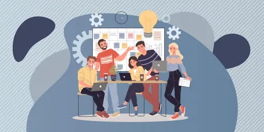

Quiénes somos
Conoce que estudiantes forman parte de este equipo y la experiencia vivida por ellos durante el proyecto

Rafael
Mi nombre es Rafael Campos Vallone, estoy cursando segundo de ASIX (Administración de Sistemas Informáticos en Red) y soy uno de los participantes en este proyecto.
Junto a mis compañeros, hemos intentado repartir el trabajo de forma equitativa. Por mi parte, junto a Iván Padilla Reina, me encargué de investigar BBDUK, filtrar las muestras y comparar los resultados con los obtenidos mediante otras herramientas. Al comprobar que BBDUK ofrecía mejores resultados, desarrollamos los scripts necesarios para filtrar todas las muestras. También me encargué de gestionar el almacenamiento del servidor.
Este proyecto me ha aportado una buena experiencia, ya que he adquirido conocimientos de biología y herramientas bioinformáticas, además de poder poner en práctica mis habilidades como informático.
Ivan
Mi nombre es Ivan Padilla Reina y actualmente estoy cursando segundo de ASIR (Administración de Sistemas Informáticos en Red).
Durante el proyecto, trabajé junto a mi compañero Rafael investigando BBDUK y realizando el filtrado de las muestras. Después, comparamos los resultados con los de otras herramientas y, al obtener mejores resultados con BBDUK, desarrollamos scripts para filtrar todas las muestras. También colaboramos en la gestión del almacenamiento del servidor.
Mi experiencia ha sido muy positiva, ya que he aprendido sobre biología y bioinformática, además de poner en práctica mis conocimientos de informática y trabajar en equipo.
Iker
Mi nombre es Iker Aradillas Gómez, tengo 19 años y estoy cursando segundo de DAM (Desarrollo de Aplicaciones Multiplataforma).
Al comenzar el proyecto, nos reunimos con el profesor para organizar el trabajo. Primero recibimos clases de biología para ponernos en contexto y, después, nos dividimos en grupos de 2/3 personas. En mi caso, trabajé con Pau y Mireia investigando sobre FastP y Velvet.
La experiencia ha sido muy positiva. He aprendido sobre biología (ADN, ARN, etc.) y bioinformática, además de poner en práctica mis conocimientos de informática. También he tenido la oportunidad de conocer a gente maravillosa, aprender de ellos y disfrutar de una experiencia diferente que, sin duda, repetiría y recomendaría.
Mireia
Mi nombre es Mireia García Gómez y actualmente estoy cursando segundo de Desarrollo de Aplicaciones Web (DAW).
Para realizar el proyecto, nos dividimos en grupos de 2 o 3 personas. En mi caso, trabajé en un grupo de tres, encargándonos de FASTP y colaborando entre todos en el estudio de Red Velvet. También recibimos formación de biología para comprender mejor el filtrado y ensamblaje de las muestras.
Mi experiencia ha sido positiva, ya que he podido trabajar con personas de otros ciclos y aprender sobre un tema nuevo para mí, como la biotecnología. Me pareció muy útil recibir clases sobre el ADN antes de comenzar a trabajar con las muestras. Aunque considero que la organización podría mejorarse, ha sido una buena experiencia, especialmente al tratarse de nuestro primer proyecto más realista.
Justin
Mi nombre es Leo Justin Chiquito Sánchez, tengo 19 años y estoy cursando segundo de Desarrollo de Aplicaciones Web.
Mi participación en el proyecto comenzó formando un grupo de dos personas, en el que nos encargamos de filtrar secuencias con PrinseQ y comparar los resultados con BBDUK y FastP, hasta acabar escogiendo FastP. También colaboré en el tema del Velvet Optimizer y en la creación de esta página web.
La experiencia me ha parecido muy interesante y agradable, ya que he adquirido conocimientos sobre temas que no forman parte de mi ciclo, como el ADN y la biología, y he podido poner en práctica lo aprendido durante el primer curso.
Pau
Me llamo Pau Duque Martínez y actualmente estoy cursando el ciclo superior de Desarrollo de Aplicaciones Multiplataforma (DAM).
Al principio, aprendimos conceptos básicos de biología para entender el proyecto. Después, junto a mi grupo, trabajamos con las muestras de ADN utilizando diferentes herramientas, como Velvet y SortMeRNA.
Ha sido una experiencia muy positiva, ya que, además de aplicar conocimientos de informática, he aprendido sobre bioinformática, tanto en la formación inicial como utilizando diferentes herramientas. Me ha parecido un tema muy interesante y útil.